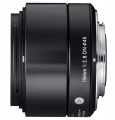

该镜头是一款专为无反相机设计的高性能广角镜头。其采用“19mm F2.8 EX DN”的光学设计，但在外观与机械结构方面都经过了全新设计。采用含3片非球面镜片的6组8枚镜头结构。用在M4/3与NEX机身上时等效焦距分别为38mm和28.5mm。该镜头的最近拍摄距离20mm，最大摄影倍率0.135倍。
更新1.03固件后这个头可以开启相位对焦了，速度跃升到上流水平。画质优秀，这是没得说的s19和s30有着极高的评价，百度很容易搜到，其实目前E口画质最强的镜头是适马60 2.8，天花板画质从中心到边缘都是。可惜她的焦段和光圈都比较尴尬，买的人太少了
分辨率高 对逆光的抗干扰强 数毛利器
异响不是做工质量问题，是适马这个系列通用的一种环形电子马达结构，开关机的一瞬间有声音，开机后它的触点碰到就不出声了，关机后镜头里边有晃荡也是正常的，就是这个结构
看了好多回都没人写评论，急，还是进了一支，总的来说买了不后悔吧，打算用它挂机。外观与NEX很配。 http://forum.xitek.com/thread-1159870-1-1-1.html 拍了点片子放在网上做参考。
做工，金属感，棒！。全开锐利，标准广角视域。光圈不知是什么结构，做了点科技感的造型。
对焦比套头慢一点，关机开机比套头慢，镜头确实会响，关机一会，有一次响了声大的。
有人用过没，看了几回都没人评价
不知道